<!DOCTYPE html>

<html>
  <head>
    <meta charset="utf-8">
    <meta name="viewport" content="width=device-width, initial-scale=1, shrink-to-fit=no">
    <title>Warwick University Study</title>
    <script src="./js/jspsych.js"></script>
    <script src="./js/plugins/jspsych-fullscreen.js"></script>
    <script src="./js/plugins/jspsych-instructions.js"></script>
    <script src="./js/plugins/jspsych-html-keyboard-response.js"></script>
    <script src="./js/plugins/jspsych-html-button-response.js"></script>
    <script src="./js/plugins/jspsych-image-keyboard-response.js"></script>
    <script src="./js/plugins/jspsych-external-html.js"></script>
    <script src="./js/plugins/jspsych-survey-html-form.js"></script>
    <script src="./js/jquery.min.js"></script>
    <script type="text/javascript" src="lib/jspsych-pavlovia-2020.2.js"></script>
    <link href="./js/css/jspsych.css" rel="stylesheet" type="text/css"></link>
    <link href="https://fonts.googleapis.com/css2?family=Open+Sans:wght@400;700&display=swap" rel="stylesheet">
  </head>
  <body></body>
  <script>

  // -------- Set up --------
  /* initialise timeline*/
  var timeline=[];
  var introloop=[];
  var inputprolificID = '';
  // capture info from Prolific
  var prolificID = jsPsych.data.getURLVariable('PROLIFIC_PID');
  var study_id = jsPsych.data.getURLVariable('STUDY_ID');
  var session_id = jsPsych.data.getURLVariable('SESSION_ID');
  //uncomment to save locally
  //var uniqueid = (Math.floor(Math.random() * 899999) + 100000).toString();
  //var filename = "exp_" + condition + "_" + inputprolificID;
	var images;
	var relevantDim;
	var bees_OG;
	function select_images(){ 
	  if (condition == "modifiedA") {                                            
	    images = [
	    './img/instruct-1.jpg',
      './img/instruct-2.jpg',
      './img/instruct-3-modA.png',
      './img/instruct-3-og.jpg',
      './img/instr_outcomes_test-fg.png',
      './img/A0-B0-L0-W0.jpg',
      './img/A0-B0-L0-W1.jpg',
      './img/A0-B0-L1-W0.jpg',
      './img/A0-B0-L1-W1.jpg',
      './img/A0-B1-L0-W0.jpg',
      './img/A0-B1-L0-W1.jpg',
      './img/A0-B1-L1-W0.jpg',
      './img/A0-B1-L1-W1.jpg',
	     ];
	  } else if (condition == "modifiedB") {                                      
	    images = [
	    './img/instruct-1.jpg',
      './img/instruct-2.jpg',
      './img/instruct-3-modB.png',
      './img/instruct-3-og.jpg',
      './img/instr_outcomes_test-fg.png',
      './img/A0-B0-L0-W0.jpg',
      './img/A0-B0-L0-W1.jpg',
      './img/A0-B0-L1-W0.jpg',
      './img/A0-B0-L1-W1.jpg',
      './img/A1-B0-L0-W0.jpg',
      './img/A1-B0-L0-W1.jpg',
      './img/A1-B0-L1-W0.jpg',
      './img/A1-B0-L1-W1.jpg',
	    ];
	  } else if (condition == "modifiedL") {                                      
	    images = [
	    './img/instruct-1.jpg',
      './img/instruct-2.jpg',
      './img/instruct-3-modL.png',
      './img/instruct-3-og.jpg',
      './img/instr_outcomes_test-fg.png',
      './img/A0-B0-L0-W0.jpg',
      './img/A0-B0-L0-W1.jpg',
      './img/A0-B1-L0-W0.jpg',
      './img/A0-B1-L0-W1.jpg',
      './img/A1-B0-L0-W0.jpg',
      './img/A1-B0-L0-W1.jpg',
      './img/A1-B1-L0-W0.jpg',
      './img/A1-B1-L0-W1.jpg',
	    ];
	  } else if (condition == "modifiedW") {                                     
	    images = [
	    './img/instruct-1.jpg',
      './img/instruct-2.jpg',
      './img/instruct-3-modW.png',
      './img/instruct-3-og.jpg',
      './img/instr_outcomes_test-fg.png',
      './img/A0-B0-L0-W0.jpg',
      './img/A0-B0-L1-W0.jpg',
      './img/A0-B1-L0-W0.jpg',
      './img/A0-B1-L1-W0.jpg',
      './img/A1-B0-L0-W0.jpg',
      './img/A1-B0-L1-W0.jpg',
      './img/A1-B1-L0-W0.jpg',
      './img/A1-B1-L1-W0.jpg',
	    ];
	  } else {                                                                   
	    images = [
	    './img/instruct-1.jpg',
      './img/instruct-2.jpg',
      './img/instruct-3-mod.png',
      './img/instruct-3-og.jpg',
      './img/instr_outcomes_test-fg.png',
      './img/A0-B0-L0-W0.jpg',
      './img/A0-B0-L0-W1.jpg',
      './img/A0-B0-L1-W0.jpg',
      './img/A0-B0-L1-W1.jpg',
      './img/A0-B1-L0-W0.jpg',
      './img/A0-B1-L0-W1.jpg',
      './img/A0-B1-L1-W0.jpg',
      './img/A0-B1-L1-W1.jpg',
      './img/A1-B0-L0-W0.jpg',
      './img/A1-B0-L0-W1.jpg',
      './img/A1-B0-L1-W0.jpg',
      './img/A1-B0-L1-W1.jpg',
      './img/A1-B1-L0-W0.jpg',
      './img/A1-B1-L0-W1.jpg',
      './img/A1-B1-L1-W0.jpg',
      './img/A1-B1-L1-W1.jpg',
	     ];
	  }
	}
	   select_images();
  
  //assign participants to experimental condition
  function select_condition(){ 
    var cond = jsPsych.randomization.sampleWithoutReplacement(["original", "modified"], 1)[0];
	  if (cond == "modified") {
	    cond = jsPsych.randomization.sampleWithoutReplacement(["modifiedA","modifiedB","modifiedL","modifiedW"], 1)[0];
	    return cond;
	  } else {
	    return cond;
	  }
  }
	  
	 var condition = select_condition()
	 //console.log(condition)
	  

      // Code which stops participants from refreshing (or leaving the page) without a warning
      window.onbeforeunload = function(){
        return "Are you sure you want to leave the experiment?";
      };
	  
    
	function startExperiment(){

      // record uniqueid in the jsPsych data
      jsPsych.data.addProperties({
        //uniqueid: uniqueid,
        relevantDim: relevantDim,
        subject_id: prolificID,
        study_id: study_id,
        session_id: session_id,
        condition: condition,
        browserinfo: navigator.userAgent, 
      });
        
      function saveData(name, data){
        var xhr = new XMLHttpRequest();
        xhr.open('POST', 'save_data.php');
        xhr.setRequestHeader('Content-Type','application/json');
        xhr.send(JSON.stringify({filename: filename, filedata: data}));
      };
   

          jsPsych.init({ //change
        timeline: timeline,
        preload_images: images,
         /*on_finish: function() {
          jsPsych.data.get().localSave('csv','exp_'+ condition + uniqueid +'.csv');
         }, */ // uncomment to locally save data file 
        show_progress_bar: false,
        auto_update_progress_bar: false,
        on_finish: function(data) {
        var debriefText = `
<div style="text-align: left; font-size: 1em; line-height: 1.5em; font-family: 'Open Sans', sans-serif; margin: 0 auto; max-width: 1200px;">
              <p style="text-align: center;font-size: 1.5em;line-height: 1.5em;"><strong> Debriefing </strong><br />
              <p style="font-size: 1em; display: block;"><strong>Title of Project:</strong> Learning from action-dependent experience</p>
              <p style="font-size: 1em; display: block;"><strong>Name of Researcher(s):</strong> Jan Antkiewicz </p>
              <p style="font-size: 1em; display: block;"><strong>Name of Supervisor:</strong> Professor Thomas Hills</p>
              
              <div style="text-align: center; margin-bottom: 20px;">
              <p style="font-size: 1.1em;">
              <strong> This is the end of the experiment. Congratulations! <br>
              You have gained <span style="color: #FFBF00;"><strong>${pointsCurrent}</strong></span> points on the Beekeeping task, 
              which means that you will be paid <span style="color: #FFBF00;"><strong>${calculateBonus()}£</strong></span> of bonus.
              </strong>
              <br/>
              </p>
              <p style="font-size: 0.95em;">*Please note that your bonus will be paid after we finish collecting data from all participants.</p>
              </div>

              <p style="margin-top: 0;"><strong>Study Aims:</strong><br/>The world that surrounds us is full of complexity and randomness. To operate in such world despite the limitations of our brains we learned to use various mental shortcuts. However, these shortcuts can sometimes lead to oversimplified thinking and bias. When in the course of learning from experience a person develops an overly simplistic belief about the world one is said to have fallen into a "learning trap".<br/><br/>
              
             On the Beekeeping task, you were asked to discover which bees were friendly/dangerous based on their features. The rule in our experiment was always based on two relevant features. For example, all bees with both Stripped Body and Double Wings would be dangerous. Some people, however, oversimplify the rule, focusing on just one feature (e.g., avoiding all bees with Double Wings). Without feedback on the bees they avoid, people don’t realize that some of those avoided bees are actually friendly, which prevents them from correcting their simplistic belief<br/><br/>
             
             Our research explored how the complexity of the environment affects creation of learning traps. The rule predictive of bees beeing friendly/dangerous always depended on two features. However, some people encountered bees that differed on four dimensions (Antennae, Body, Wings and Legs) and others encountred bees that differed on only three dimensions (e.g., Antennae, Body and Wings). We hypothesized that in more complex environments more people will be inclined to adopt the simplistic 'learning trap' rule.</p></br>

               <p style="margin-top: 0;"><strong>Withdrawal:</strong><br/>If you wish to withdraw your data from this study, please email the researcher Jan Antkiewicz (jan.antkiewicz@warwick.ac.uk) quoting your ProlificID: <strong>${inputprolificID}</strong> by 30.12.24. After this date, it will not be possible to withdraw your data, but nor will it be possible to identify or link it to you. 
                </p>

               <p style="margin-top: 0;"><strong>Further information:</strong><br/>If you have a complaint about the way you have been dealt with during the study, please contact Professor Thomas Hills (t.t.hills@warwick.ac.uk), who is the supervisor of this study. <strong><br><br>Otherwise, this is the end of the study. Please click the button below to submit your data and return to Prolific. </strong>
                </p>
                <br>
                <div style="width: 100%; text-align: center; margin-top: 20px;">
                <button onclick="window.location.href='https://app.prolific.com/submissions/complete?cc=C14WB6GT'", style="font-size: 18px;">RETURN TO PROLIFIC</button>
                <br><br><br>
                <p style="margin-top: 0;">*In case, the button doesn't work, copy and paste the following link in your browser: <br> https://app.prolific.com/submissions/complete?cc=C14WB6GT</p>
            </div>
            </div>
        `;
        document.write(debriefText);;
		    } 
      });
    } 
    

    // function to end the experiment
    function endExperiment(dataset,callback) {
      // $.post('submit',{"content": dataset}); // uncomment to post data
      //console.log(dataset) // comment out to avoid console log
      setTimeout(callback,1000)
      // setTimeout specifies after a certain no of milliseconds
    }

    
    // -- for points
    var pointsInitial = 50;
    var pointsAdded = 0;
    var totalPoints = 0;
    
    function addNum(pointsInitial,pointsAdded){
      return pointsInitial+pointsAdded
    };
    var pointsCurrent = addNum(pointsInitial,pointsAdded);

    pointsCurrent = addNum(pointsCurrent,pointsAdded);


    // -------- Randomisation set up

function shuffle(array) {
    var currentIndex = array.length, temporaryValue, randomIndex;

    // While there remain elements to shuffle...
    while (0 !== currentIndex) {

      // Pick a remaining element...
      randomIndex = Math.floor(Math.random() * currentIndex);
      currentIndex -= 1;

      // And swap it with the current element.
      temporaryValue = array[currentIndex];
      array[currentIndex] = array[randomIndex];
      array[randomIndex] = temporaryValue;
    }

    return array;
}
 
  // ------- Feedback Condition
  var feedback = ['partial'];
  jsPsych.data.addProperties({
          feedback: feedback
        });

  // ------- Permutation for relevant dims
function select_relevantDim(){                                                
if(condition == "modifiedA"){
  relevantDim = ['LB','LW','BW'];
  relevantDim = jsPsych.randomization.sampleWithoutReplacement(relevantDim, 1)[0]; 
  }
  else if (condition == "modifiedB"){
    relevantDim = ['LA','LW','WA'];
    relevantDim = jsPsych.randomization.sampleWithoutReplacement(relevantDim, 1)[0]; 
  }
  else if (condition == "modifiedL"){
    relevantDim = ['BA','BW','WA'];
    relevantDim = jsPsych.randomization.sampleWithoutReplacement(relevantDim, 1)[0]; 
  }
  else if (condition == "modifiedW"){
    relevantDim = ['LB','LA','BA'];
    relevantDim = jsPsych.randomization.sampleWithoutReplacement(relevantDim, 1)[0]; 
  }
  else{
    relevantDim = ['LB','LW','LA','BA','BW','WA'];
    relevantDim = jsPsych.randomization.sampleWithoutReplacement(relevantDim, 1)[0]; 
  }
 }
 select_relevantDim();
//console.log(relevantDim)
// depending on permutation, change the subset of 'target' bees that will be dangerous if approached

function makeConjunctionBees(lastBee){                                        
if(condition == "modifiedA"){ 
      if (relevantDim == 'LB'){
      return lastBee == "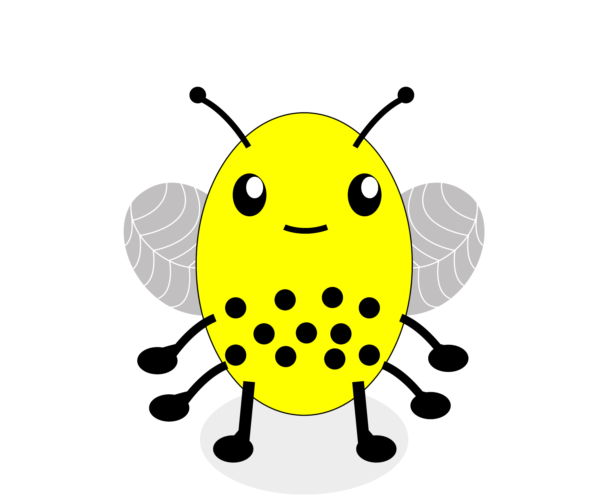" || lastBee == "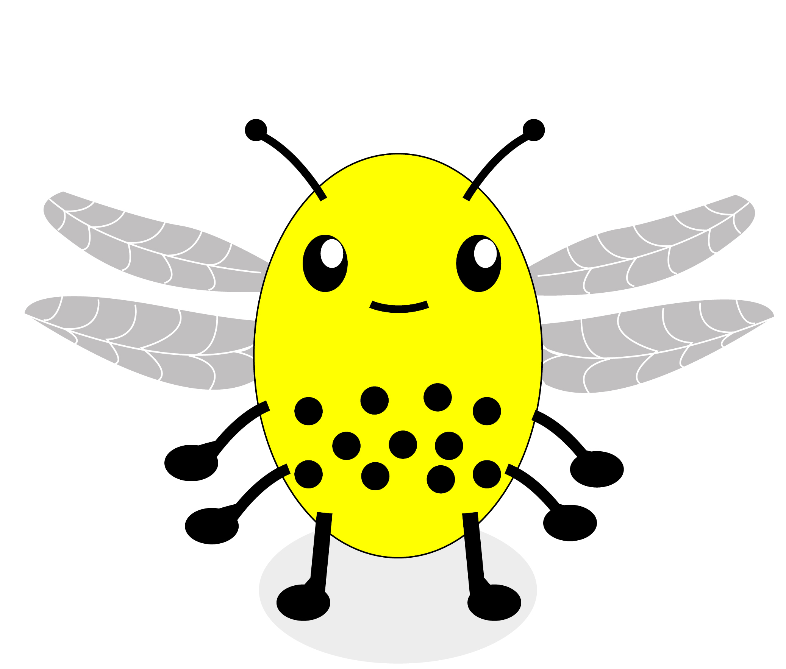";
    } else if (relevantDim == 'LW'){
      return lastBee =="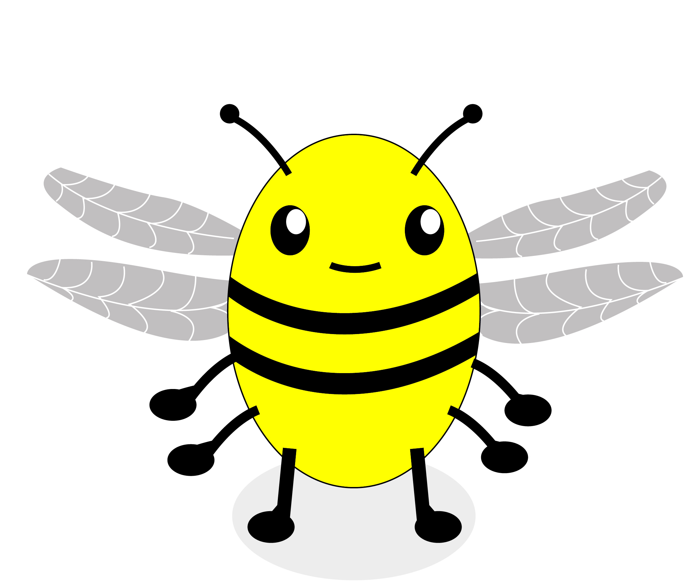" ||  lastBee == "";
    } else if (relevantDim == 'BW'){
      return lastBee =="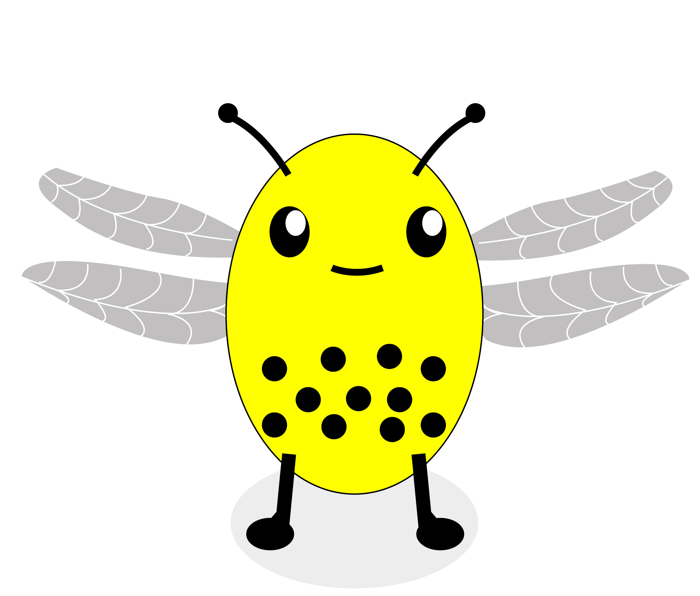" || lastBee == "";
    } else {
      return false;
    }
  } else if (condition == "modifiedB") {
      if (relevantDim == 'LA'){
      return lastBee == "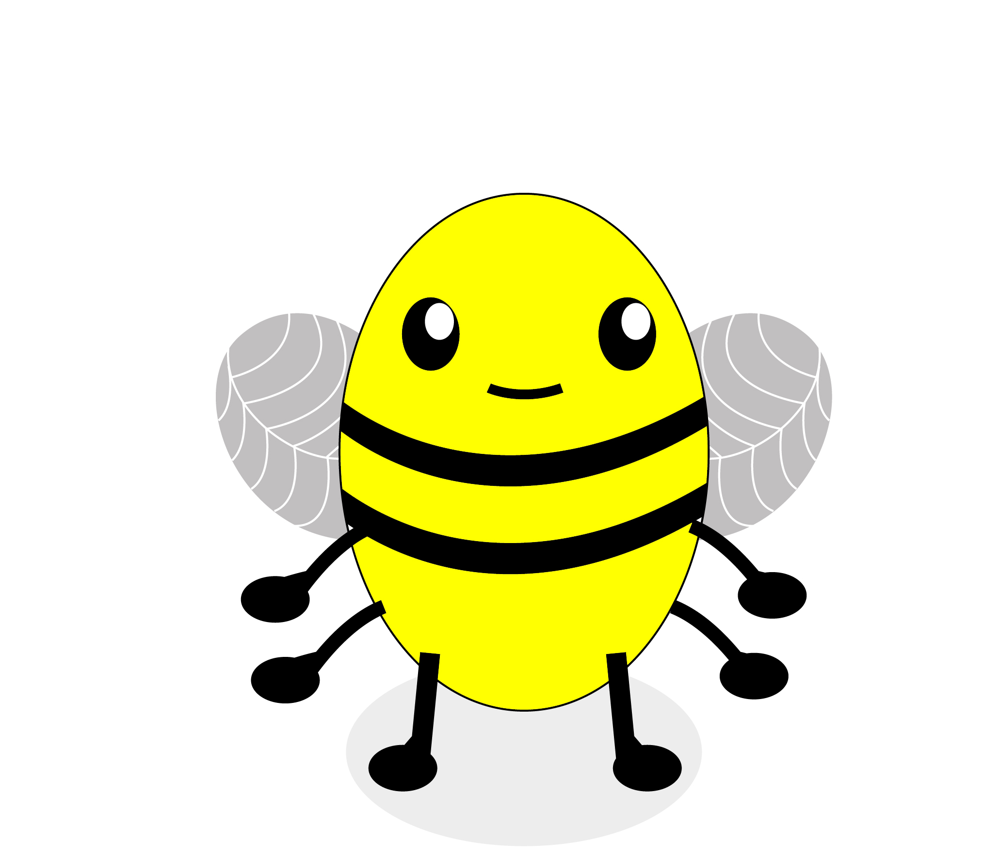" || lastBee == "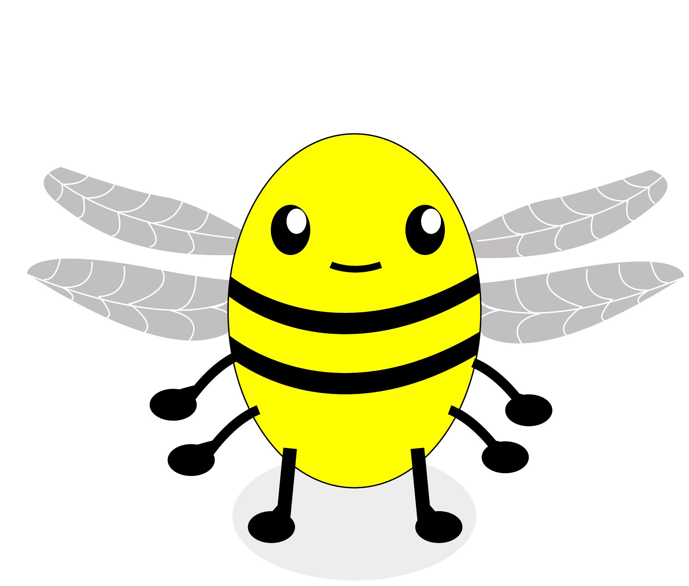";
    } else if (relevantDim == 'LW'){
      return lastBee =="" ||  lastBee == "";
    } else if (relevantDim == 'WA'){
      return lastBee =="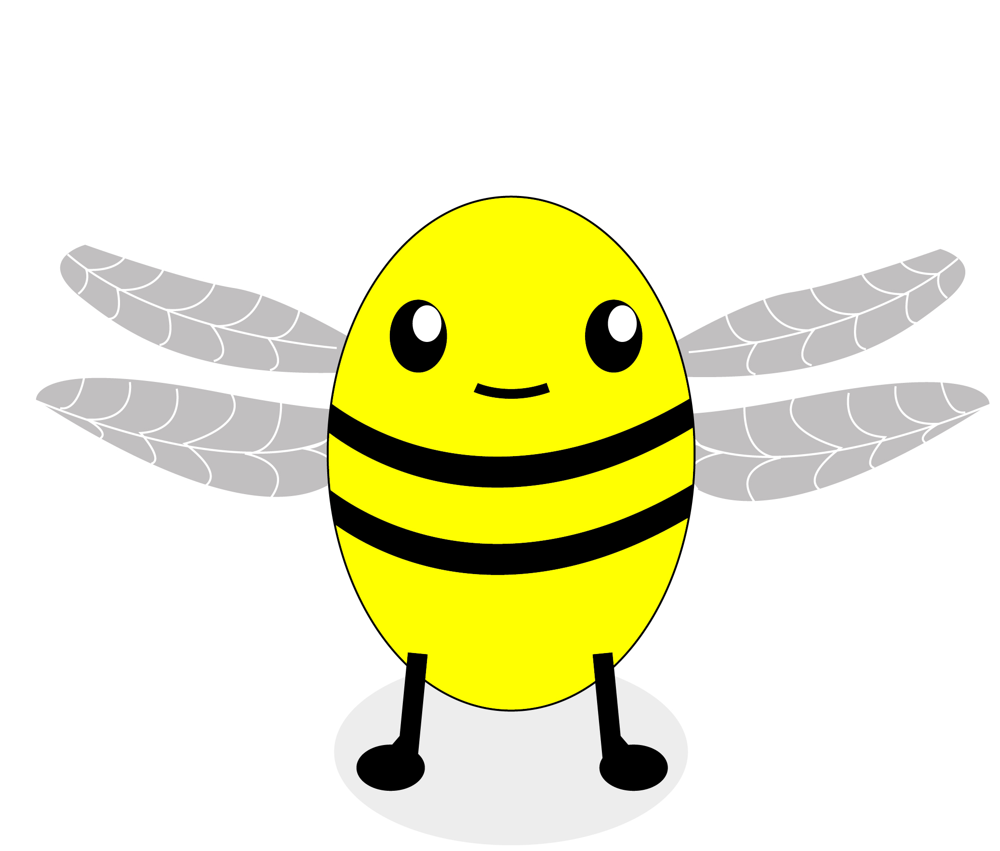" || lastBee == "";
    } else {
      return false;
    }
  } else if (condition == "modifiedL") {
      if (relevantDim == 'BA'){
      return lastBee == "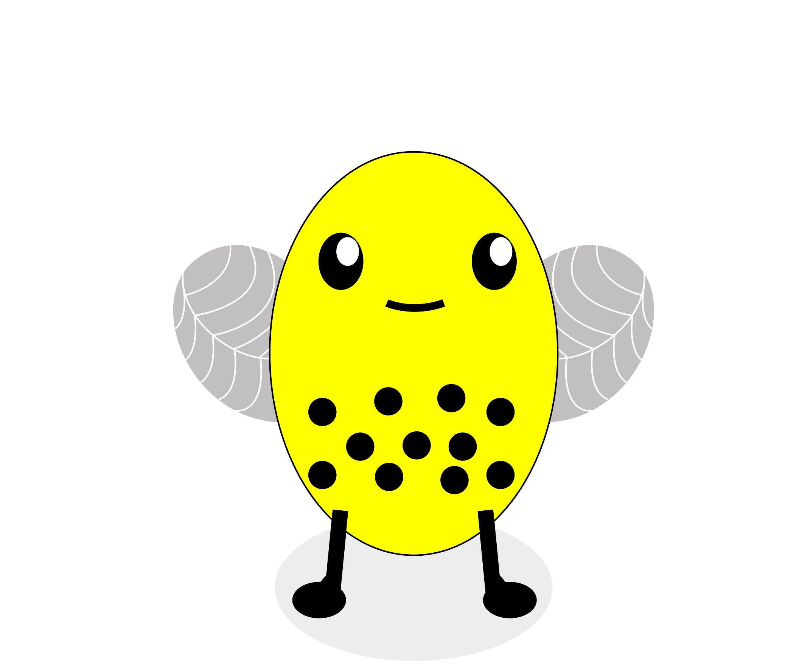" || lastBee == "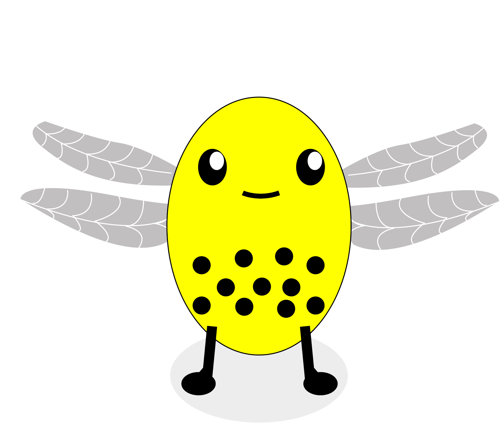";
    } else if (relevantDim == 'BW'){
      return lastBee =="" ||  lastBee == "";
    } else if (relevantDim == 'WA'){
      return lastBee =="" || lastBee == "";
    } else {
      return false;
    }
  } else if (condition == "modifiedW") {
      if (relevantDim == 'LB'){
      return lastBee == "" || lastBee == "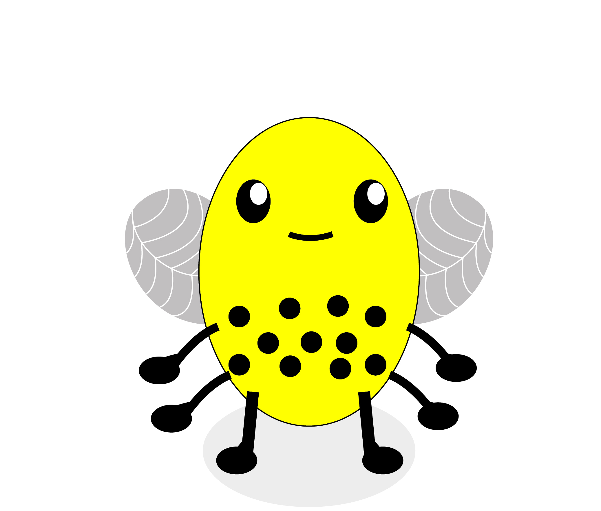";
    } else if (relevantDim == 'LA'){
      return lastBee =="" ||  lastBee == "";
    } else if (relevantDim == 'BA'){
      return lastBee =="" || lastBee == "";
    } else {
      return false;
    }
  } else {
      if (relevantDim == 'LB'){
      return lastBee == "" || lastBee == "" || lastBee == "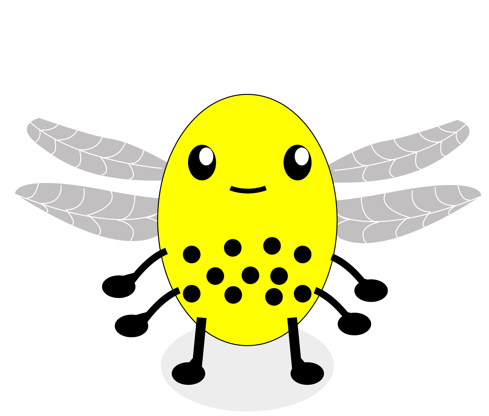" || lastBee == "";
    } else if (relevantDim == 'LA'){
      return lastBee =="" || lastBee == "" || lastBee == "" || lastBee == "";
    } else if (relevantDim == 'BA'){
      return lastBee =="" || lastBee == "" || lastBee == "" || lastBee == "";
    } else if (relevantDim == 'BW'){
      return lastBee =="" || lastBee == "" || lastBee == "" || lastBee == "";
    } else if (relevantDim == 'WA'){
      return lastBee =="" || lastBee == "" || lastBee == "" || lastBee == "";
    } else if (relevantDim == 'LW'){
      return lastBee =="" || lastBee == "" || lastBee == "" || lastBee == "";
    } else {
      return false;
    }
  }
}

  // ------- Bee stimuli
function select_beesOG(){//NEW
if(condition == "modifiedA"){
 bees_OG = shuffle([
      'A0-B0-L0-W0',
      'A0-B0-L0-W1',
      'A0-B0-L1-W0',
      'A0-B0-L1-W1',
      'A0-B1-L0-W0',
      'A0-B1-L0-W1',
      'A0-B1-L1-W0',
      'A0-B1-L1-W1',
  ]);
} else if (condition == "modifiedB"){
  bees_OG = shuffle([
      'A0-B0-L0-W0',
      'A0-B0-L0-W1',
      'A0-B0-L1-W0',
      'A0-B0-L1-W1',
      'A1-B0-L0-W0',
      'A1-B0-L0-W1',
      'A1-B0-L1-W0',
      'A1-B0-L1-W1',
  ]);
} else if (condition == "modifiedL"){
  bees_OG = shuffle([
      'A0-B0-L0-W0',
      'A0-B0-L0-W1',
      'A0-B1-L0-W0',
      'A0-B1-L0-W1',
      'A1-B0-L0-W0',
      'A1-B0-L0-W1',
      'A1-B1-L0-W0',
      'A1-B1-L0-W1',
  ]);
} else if (condition == "modifiedW"){
  bees_OG = shuffle([
      'A0-B0-L0-W0', 
      'A0-B0-L1-W0',
      'A0-B1-L0-W0',
      'A0-B1-L1-W0',
      'A1-B0-L0-W0', 
      'A1-B0-L1-W0', 
      'A1-B1-L0-W0', 
      'A1-B1-L1-W0'
  ]);
}
else{
  bees_OG = shuffle(
    [
      'A0-B0-L0-W0',
      'A0-B0-L0-W1',
      'A0-B0-L1-W0',
      'A0-B0-L1-W1',
      'A0-B1-L0-W0',
      'A0-B1-L0-W1',
      'A0-B1-L1-W0',
      'A0-B1-L1-W1',
      'A1-B0-L0-W0',
      'A1-B0-L0-W1',
      'A1-B0-L1-W0',
      'A1-B0-L1-W1',
      'A1-B1-L0-W0',
      'A1-B1-L0-W1',
      'A1-B1-L1-W0',
      'A1-B1-L1-W1'
    ]);
  }
}
select_beesOG();//NEW
 
 // depending on permutation, which are the dangerous and friendly bees
// i.e. conjunction bees
//so the dangerous bees are always ones that have features present on both relevant dimensions

function makeDangerousBees(){//NEW
if(condition == "modifiedA"){
  if (relevantDim == 'LB') {
    return [
      'A0-B1-L1-W0', 'A0-B1-L1-W1'
    ]
  } else if (relevantDim == 'LW') {
    return [
      'A0-B0-L1-W1', 'A0-B1-L1-W1'
    ]
  } else if (relevantDim == 'BW') {
    return [
      'A0-B1-L0-W1', 'A0-B1-L1-W1'
    ]
  }
} else if (condition == "modifiedB"){
    if (relevantDim == 'LA') {
      return [
        'A1-B0-L1-W0', 'A1-B0-L1-W1'
      ]
    } else if (relevantDim == 'LW') {
      return [
        'A0-B0-L1-W1', 'A1-B0-L1-W1'
      ]
    } else if (relevantDim == 'WA') {
      return [
        'A1-B0-L0-W1', 'A1-B0-L1-W1'
      ]
  }
} else if (condition == "modifiedL"){
    if (relevantDim == 'BA') {
      return [
        'A1-B1-L0-W0', 'A1-B1-L0-W1'
      ]
    } else if (relevantDim == 'BW') {
      return [
        'A0-B1-L0-W1', 'A1-B1-L0-W1'
      ]
    } else if (relevantDim == 'WA') {
      return [
        'A1-B0-L0-W1', 'A1-B1-L0-W1'
      ]
  }
} else if (condition == "modifiedW"){
    if (relevantDim == 'LB') {
    return [
      'A1-B1-L1-W0', 'A0-B1-L1-W0'
    ]
  } else if (relevantDim == 'LA') {
    return [
      'A1-B1-L1-W0', 'A1-B0-L1-W0'
    ]
  } else if (relevantDim == 'BA') {
    return [
      'A1-B1-L1-W0', 'A1-B1-L0-W0'
    ]
  }
} else {
if (relevantDim == 'LB') {
    return [
      'A1-B1-L1-W0',
      'A1-B1-L1-W1',
      'A0-B1-L1-W0',
      'A0-B1-L1-W1',
    ]
  } else if (relevantDim == 'LA') {
    return [
      'A1-B1-L1-W0',
      'A1-B1-L1-W1',
      'A1-B0-L1-W0',
      'A1-B0-L1-W1',
    ]
  } else if (relevantDim == 'BA') {
    return [
      'A1-B1-L0-W0',
      'A1-B1-L1-W0',
      'A1-B1-L0-W1',
      'A1-B1-L1-W1',
    ]
  } else if (relevantDim == 'BW') {
    return [
      'A0-B1-L0-W1',
      'A1-B1-L0-W1',
      'A0-B1-L1-W1',
      'A1-B1-L1-W1',
    ]
  } else if (relevantDim == 'WA') {
    return [
      'A1-B0-L0-W1',
      'A1-B0-L1-W1',
      'A1-B1-L0-W1',
      'A1-B1-L1-W1',
    ]
  } else if (relevantDim == 'LW') {
    return [
      'A0-B1-L1-W1',
      'A1-B1-L1-W1',
      'A1-B0-L1-W1',
      'A0-B0-L1-W1',
    ]
  }
}
}


function makeBees(){ 
if(condition == "modifiedA" || condition == "modifiedB" || condition == "modifiedL" || condition == "modifiedW") {
  var bees_dangerous = shuffle(makeDangerousBees());                            //get the dangerous bees (2/8)
  //console.log(bees_dangerous)
  var FriendlyBees = bees_OG.filter(function(item) {                            //get the friendly bees (6/8)
    return !makeDangerousBees().includes(item); 
  });
  var bees_friendly = shuffle(FriendlyBees)
  //console.log(bees_friendly)

  var first_subblock = shuffle(bees_dangerous.concat(bees_friendly));           //combine friendly and dangerous and shuffle to form first subblock
  var second_subblock = shuffle(bees_dangerous.concat(bees_friendly));          //combine friendly and dangerous and shuffle to form second subblock
  var beesStim = first_subblock.concat(second_subblock);                        //combine subblocks to form a block
  //console.log(beesStim);
  return beesStim;
  
}
else{

  var bees_dangerous = shuffle(makeDangerousBees());                            //get dangerous bees (4/16)
  var bees_friendly = bees_OG.filter(function(item) {
    return !makeDangerousBees().includes(item); 
  }); 
  var bees_friendly = shuffle(bees_friendly);                                   //get friendly bees (12/16)

  var bees_dangerous_1 = bees_dangerous.slice(0,2);                             //dangerous bees for first subblock of block, 2 dangerous
  var bees_friendly_1 = bees_friendly.slice(0,6);                               // friendly bees for first subblock of block, 6 friendly
  var bees_dangerous_2 = bees_dangerous.slice(2,);                              // '' for second subblock of block, 2 dangerous
  var bees_friendly_2 = bees_friendly.slice(6,);                                // '' for second subblock of block, 6 friendly

  var first_subblock = shuffle(bees_dangerous_1.concat(bees_friendly_1));       // combine friendly and dangerous and shuffle to form first subblock
  var second_subblock = shuffle(bees_dangerous_2.concat(bees_friendly_2));      //combine friendly and dangerous and shuffle to form second subblock
  var beesStim = first_subblock.concat(second_subblock);
  return beesStim;
}
};

var bees = []; // initiate bees array

for (var j = 0; j < 8; j++) {                                                   
  bees = bees.concat(makeBees());  // now repeat the makeBees function 8 times, concatenating each time. CHANGE 2 TO 6
}                           
                                 
// take the first 128 bees for learning phase, leave 32 for test phase.

var LP_bees = bees.slice(0,96); // Learning phase bees, take 128 bees over 8 blocks. CHANGE 16 TO 96
var TP_bees = bees.slice(96,); // Test phase bees, take 32 bees over 2 blocks (1 big block). CHANGE 16 TO 64


// -------- PAVLOVIA --------
var pavlovia_init = {
    type: "pavlovia",
    command: "init"
};
timeline.push(pavlovia_init);


// -------- INFO & CONSENT PAGE --------		
var info = {
    type: 'html-button-response',
    stimulus: `
      <div style="text-align: left;font-size: 0.9em; line-height: 1.2em;">
<p style="text-align: center;font-size: 1.5em;line-height: 1.5em;"><strong>Department of Psychology, University of Warwick <br /> Participant Information Sheet </strong><br/><br/>
<p style="font-size: 1em; display: block;"><strong>Title of Project:</strong> Learning from action-dependent experience</p>
<p style="font-size: 1em; display: block;"><strong>Name of Researcher(s):</strong> Jan Antkiewicz </p>
<p style="font-size: 1em; display: block;"><strong>Name of Supervisor:</strong> Professor Thomas Hills</p>
<br/>

<ol style="margin-left: 0; padding-left: 1.1em; margin-bottom: 0;">
    <li><strong> Invitation </strong></li>
</ol>
<p style="margin-top: 0;">You are invited to take part in a research study on learning from decision-dependent experience. Please note that you need to be above 18 years old to participate. This study has been reviewed and approved by the Department of Psychology Research Ethics Committee at the University of Warwick. Please take the time to read the following information carefully and ask us if anything is not clear or if you would like more information. 
</p>
<ol start="2" style="margin-left: 0; padding-left: 1.1em; margin-bottom: 0;">
    <li><strong> What will happen?</strong></li>
</ol>
<p style="margin-top: 0;">The study will ask you to provide some basic demographic information about yourself and then to make a series of decisions about various stimuli presented on the screen. You will be presented with a series of cartoon bees, and your task will be to discover the rule for distinguishing friendly from dangerous bees based on their features. You will be introduced to the details of the task before we ask you to make your decisions. Your responses will help us understand how people use information to learn and guide their actions. The total time taken should be about 15 minutes. <u>Please note that this study needs to be taken on a computer or laptop.</u></p>
<ol start="3" style="margin-left: 0; padding-left: 1.1em; margin-bottom: 0;">
    <li><strong> Participant rights Criteria</strong></li>
</ol>
<p style="margin-top: 0;">Your participation in this study is completely voluntary and choosing not to take part will not affect your rights in any way. You can also choose to withdraw your participation at any time during the experiment, without giving a reason. You have the right to not answer or respond to any question that is asked of you. If you wish to withdraw from participating in the study, please close your browser. Incomplete experiments will be discarded from analysis.

If you wish to withdraw your data from this study after the completion, email the researcher Jan Antkiewicz (jan.antkiewicz@warwick.ac.uk) by 30.12.24 quoting your Prolific ID. After this date it will not be possible to withdraw your data but nor will it be possible to identify it or link it to you.
</p>
<ol start="4" style="margin-left: 0; padding-left: 1.1em; margin-bottom: 0;">
    <li><strong> Benefits and risks </strong></li>
</ol>
<p style="margin-top: 0;">The study will be useful in understanding how humans learn from their experience and factors influencing learning. Your performance may be able to tell you something about your own learning habits. The study does not involve any known risks to participants. 
.</p>
<ol start="5" style="margin-left: 0; padding-left: 1.1em; margin-bottom: 0;">
    <li><strong> Expenses and payments </strong></li>
</ol>
<p style="margin-top: 0;">You will receive £2 for completing the task and a performance-based bonus of up to £1.7. The latter depends on the points accumulated during the task, where one point is equivalent to £0.01.</p>
<p style="margin-top: 0;"> </p>
<ol start="6" style="margin-left: 0; padding-left: 1.1em; margin-bottom: 0;">
    <li><strong> Confidentiality</strong></li>
</ol>
<p style="margin-top: 0;">No identifiable data will be collected from you as part of this study.</p>
<ol start="7" style="margin-left: 0; padding-left: 1.1em; margin-bottom: 0;">
    <li><strong> What will happen to the data collected about me?</strong></li>
</ol>
<p style="margin-top: 0;">We will use your data in the ways needed to conduct and analyse the research study. We will be using information from you in order to undertake this study and will act as the data controller for this study. We are committed to protecting the rights of individuals in line with data protection legislation. During the data collection period, your data will be stored securely on University of Warwick servers. The data will only be accessed by the researchers and supervisors named above and will not be shared with any other organisations. Your rights to access, change or move your information are limited, as we need to manage your information in specific ways in order for the research to be reliable and accurate. The University of Warwick has in place policies and procedures to keep your data safe. Further information can be found in the University’s Privacy notice for research, here: https://warwick.ac.uk/services/idc/dataprotection/privacynotices/researchprivacynotice, or by contacting the Information and Data Compliance Team at GDPR@warwick.ac.uk. 
</p>
<ol start="8" style="margin-left: 0; padding-left: 1.1em; margin-bottom: 0;">
    <li><strong> What will happen to the results of the study?</strong></li>
</ol>
<p style="margin-top: 0;">The results may be reported in a journal publication or a conference presentation. The project does not involve or report comparisons or evaluations of individuals; the results will be reported anonymously. 
</p>
<ol start="9" style="margin-left: 0; padding-left: 1.1em; margin-bottom: 0;">
    <li><strong> Further information/complaints</strong></li>
</ol>
<p style="margin-top: 0;">If you have any questions about this study, or if you have a complaint about the way you have been dealt with during the study or any possible harm you might have suffered, please contact the person below, who is the supervisor of this study.
<br><br>
Professor Thomas Hills &emsp;&emsp; Email: t.t.hills@warwick.ac.uk <br>
Department of Psychology<br>		
University of Warwick<br>
Coventry<br>
CV4 7AL<br>
<br>
If you wish to raise a complaint on how we have handled your personal data, you can contact our Data Protection Officer who will investigate the matter: DPO@warwick.ac.uk.
</p>
    `,
    choices: ['Next'],
    margin_vertical: '1em', // Adjust the vertical margin as needed
};

timeline.push(info);


// -------- CONSENT --------		
var consent = {
    type: 'html-button-response',
    stimulus: `
        <div style="text-align: left;font-size: 0.9em; line-height: 1.2em;">
        <p style="text-align: center;font-size: 1.5em;line-height: 1.5em;"><strong>Department of Psychology, University of Warwick <br /> Consent form </strong><br />
        <p style="font-size: 1em; display: block;"><strong>Title of Project:</strong> Factors influencing learning from action-dependent experience</p>
        <p style="font-size: 1em; display: block;"><strong>Name of Researcher(s):</strong> Jan Antkiewicz</p>
        <p style="font-size: 1em; display: block;"><strong>Name of Supervisor:</strong> Professor Thomas Hills</p>
<br />
        <p style="font-size: 1em; display: block;">By checking the box below, I confirm that:</p>
        <ol style="margin-left: 0; padding-left: 1.1em; margin-bottom: 0;line-height: 1.5;">
    <li>	I have read and understand the information sheet for the above study. I have had the opportunity to consider the information, ask questions by contacting the researcher (jan.antkiewicz@warwick.ac.uk) and have had these answered satisfactorily.</li>
    <li> I understand that my participation is voluntary and that I am free to withdraw at any time by closing the browser without giving any reason, without my education or legal rights being affected.</li>
    <li> I understand that my data collected during the study may be looked at by researchers (Jan Antkiewicz) and their supervisor (Professor Thomas Hills) from the University of Warwick. I give permission for these individuals to access my data.</li>
    <li> I am over 18 years old.</li>
    <li> I agree to take part in the above study. </li>
        </ol>
    <p style="font-size: 1em; display: block;"> I have read and I agree with the points above. </p>

        
        </div>
    `,
    choices: ['Consent'],
    margin_vertical: '1em', 
};

timeline.push(consent);


// -------- DEMOGRAPHICS --------
// Define a function to toggle visibility based on the checkbox state
function toggleAgeInputVisibility() {
    var ageInput = document.getElementById('age');
    var preferNotToSayCheckbox = document.getElementById('preferNotToSay');

    ageInput.style.display = preferNotToSayCheckbox.checked ? 'none' : 'block';
    ageInput.required = !preferNotToSayCheckbox.checked;
}

var demographics = {
    type: 'survey-html-form',
    preamble: `
        <div style="text-align: left;font-size: 0.9em; line-height: 1.2em;">
           <p style="text-align: center;font-size: 1.5em;line-height: 1.5em;"><strong> Demographic infromation</strong><br />
            <p style="font-size: 14px;">We need this information to comply with the British Psychological Society guidelines for transparency and scientific rigor.</p>
        </div>
    `,
    html: `
        <label for="gender" style="display: block; text-align: left; font-size: 14px;"><strong>*Gender: &nbsp;</strong></label>
        <select name="gender" id="gender" class="drop-menu" required style="display: block; text-align: left; font-size: 14px;">
            <option value="" disabled selected>Select gender</option>
            <option>Male</option>
            <option>Female</option>
            <option>Non-binary</option>
            <option>Not listed here</option>
            <option>Prefer not to say</option>
        </select><br />

        <label for="age" style="display: block; text-align: left; font-size: 14px;">
            <strong>*Age:</strong>
            <input type="number" name="age" id="age" max="100" min="18" required style="width: 10%; display: block; text-align: left; font-size: 14px;" />
            <label for="preferNotToSay" style="font-size: 14px;">
                <input type="checkbox" id="preferNotToSay" onchange="toggleAgeInputVisibility()"> Prefer not to say
            </label>
        </label><br/>
        
        <label for="inputprolificID" style="display: block; text-align: left; font-size: 14px;">
            <strong>*Your Prolific ID:</strong>
            <input type="text" name="inputprolificID" id="inputprolificID" required style="width: 50%; display: block; text-align: left; font-size: 14px;" />
        </label><br/>
    `,
    button_label: 'Next',
    on_load: function() {
        // Prefill the Prolific ID after the form loads
        document.getElementById('inputprolificID').value = prolificID || '';
    },
    on_finish: function(data){
      inputprolificID = JSON.parse(jsPsych.data.get().last(1).values()[0].responses).inputprolificID
      data.gender = JSON.parse(jsPsych.data.get().last(1).values()[0].responses).gender
      data.age = JSON.parse(jsPsych.data.get().last(1).values()[0].responses).age
      data.inputprolificID = JSON.parse(jsPsych.data.get().last(1).values()[0].responses).inputprolificID
    }
};

timeline.push(demographics)


// -------- ENTER FULLSCREEN --------
timeline.push({
  type: 'fullscreen',
  fullscreen_mode: true,
  message: "<p>The experiment will switch to full screen mode when you press the button below.</p>"
});


// -------- BEEKEEPING TASK --------

// -------- Instructions & quiz --------
var instructionsModA = {
    type: 'instructions',
    pages: ['</img>',
    '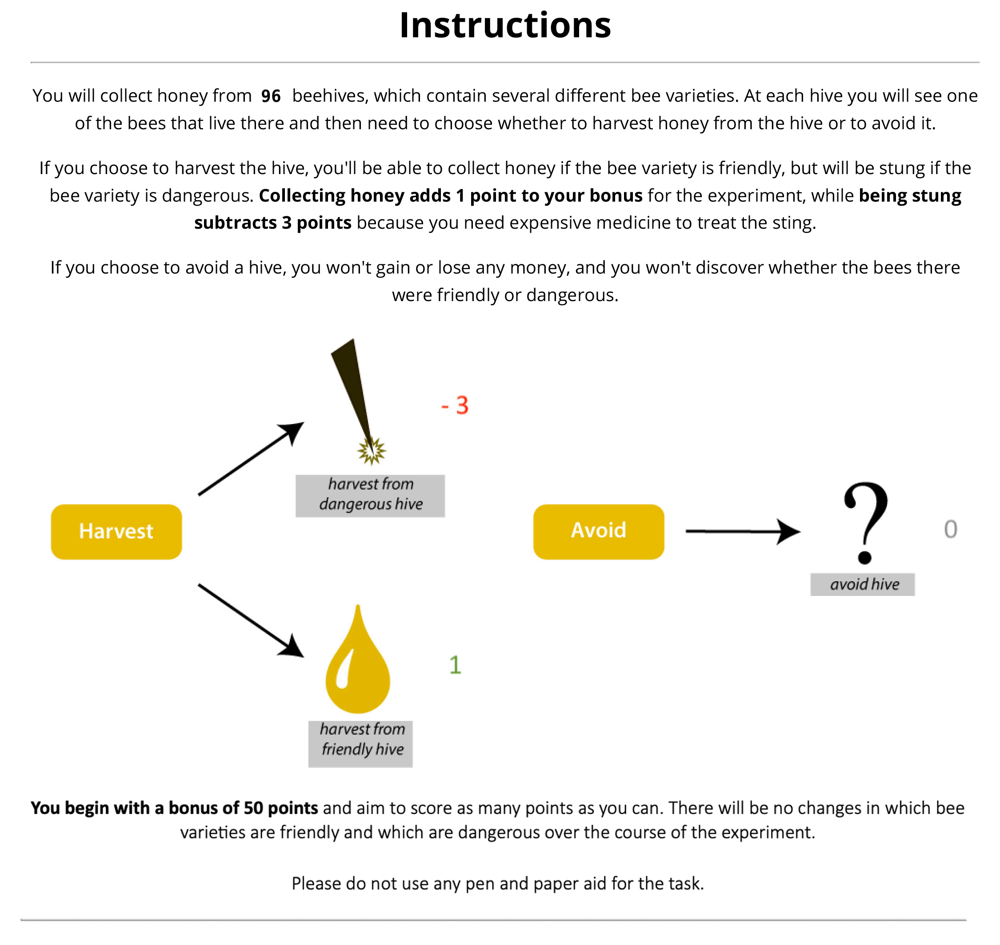</img>',
    '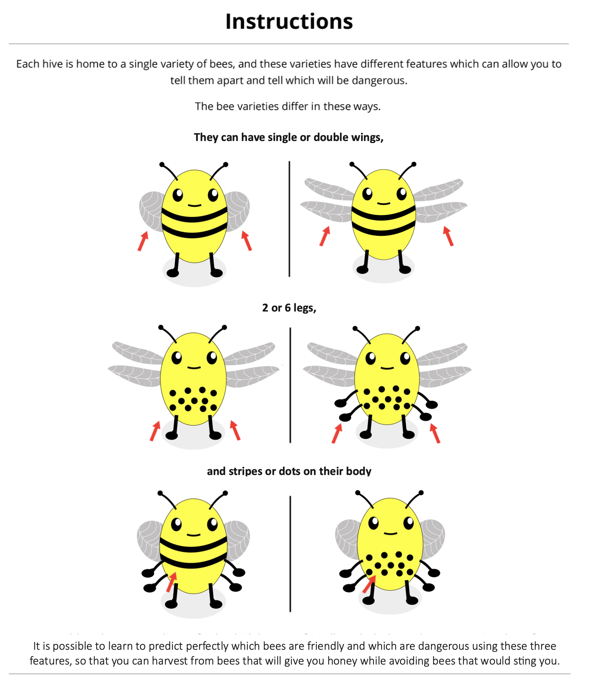</img>'
    ],
    show_clickable_nav: true,
    allow_backward: true,
};

var instructionsModB = {
    type: 'instructions',
    pages: ['</img>',
    '</img>',
    '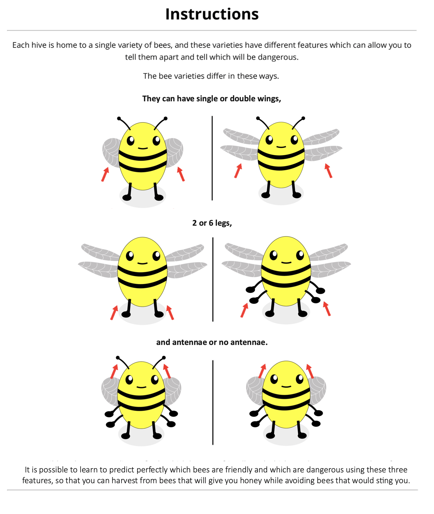</img>'
    ],
    show_clickable_nav: true,
    allow_backward: true,
};

var instructionsModL = {
    type: 'instructions',
    pages: ['</img>',
    '</img>',
    '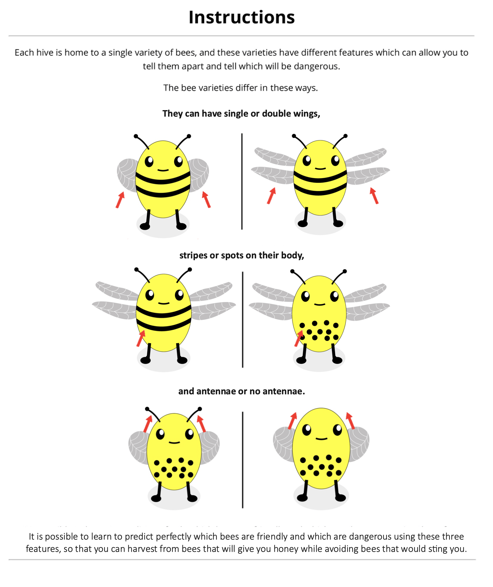</img>'
    ],
    show_clickable_nav: true,
    allow_backward: true,
};

var instructionsModW = {
    type: 'instructions',
    pages: ['</img>',
    '</img>',
    '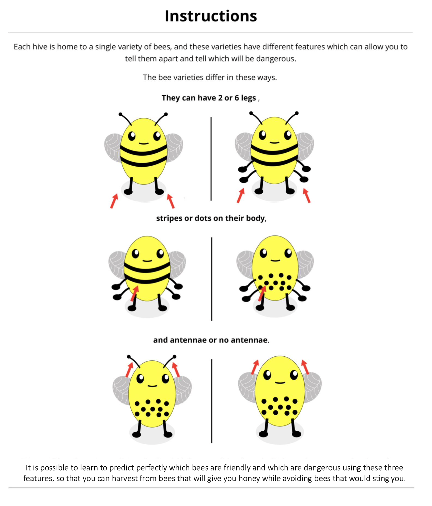</img>'
    ],
    show_clickable_nav: true,
    allow_backward: true,
};

var instructionsOg = {
    type: 'instructions',
    pages: ['</img>',
    '</img>',
    '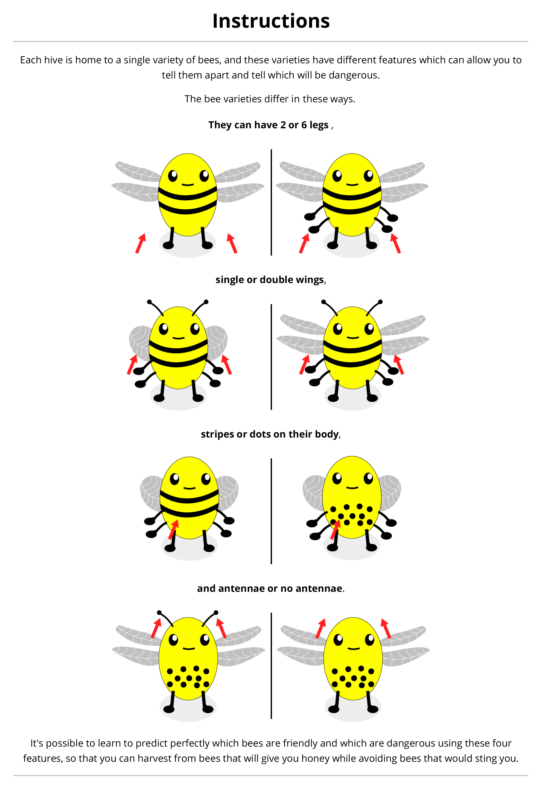</img>'
    ],
    show_clickable_nav: true,
    allow_backward: true,
};


  // ------- Conditional instructions
function InstructionsShown(){
  if (condition == "modifiedA"){
      return instructionsModA;
  } else if (condition == "modifiedB"){
      return instructionsModB;
  } else if (condition == "modifiedL"){
      return instructionsModL;
  }  else if (condition == "modifiedW"){
      return instructionsModW;
  } else {
    return instructionsOg;
  }
}
 InstructionsShown();

introloop.push(InstructionsShown())

// baseline for the instructionscorrect variable
var instructioncorrectModA = false;
var instructioncorrectModB = false;
var instructioncorrectModL = false;
var instructioncorrectModW = false;
var instructioncorrectOg = false;

// correct answers based on feedback
var ansModA = '{"legs":"checked","body":"checked","wings":"checked","change":"no","telldangerous":"feature","avoidinfo":"noInfo"}';
var ansModB = '{"legs":"checked","wings":"checked","antennae":"checked","change":"no","telldangerous":"feature","avoidinfo":"noInfo"}';
var ansModL = '{"body":"checked","wings":"checked","antennae":"checked","change":"no","telldangerous":"feature","avoidinfo":"noInfo"}';
var ansModW = '{"legs":"checked","body":"checked","antennae":"checked","change":"no","telldangerous":"feature","avoidinfo":"noInfo"}';
var ansOg = '{"legs":"checked","body":"checked","wings":"checked","antennae":"checked","change":"no","telldangerous":"feature","avoidinfo":"noInfo"}';

// comprehension check
var quiz = {
  type:'survey-html-form',
  html: '<pBefore beginning the experiment, you must answer a few simple questions to ensure you have read the instructions. If you do not answer all questions correctly, you will be returned to the start of the instructions and have a chance to retake this quiz.</p>' +
  '<p>Which of the following are features of the bee varieties?</p>' +
  '<input type="checkbox" name="legs" value="checked">Two or six legs <br> ' +
  '<input type="checkbox"  name="square" value="checked">Square or round body <br>' +
  '<input type="checkbox"  name="eyes" value="checked">Single or compound eyes <br>' +
  '<input type="checkbox"  name="body" value="checked">Stripes or spots on body <br>' +
  '<input type="checkbox"  name="sting" value="checked">Stinger or no stinger <br>'+
  '<input type="checkbox"  name="wings" value="checked">Single or double wings <br>' +
  '<input type="checkbox"  name="tall" value="checked">Tall or short body <br>' +
  '<input type="checkbox" name="antennae" value="checked">Antennae or no antennae' +
  '<p>Can a bee variety change from being friendly to dangerous or dangerous to friendly over time?</p>' +
  '<select id="change" name="change" class="form-control">' +
  '   <option value="noresp" SELECTED></option>' +
	'   <option value="yes">yes</option>' +
	'   <option value="no">no</option>' +
  '</select> <br>' +
  '<p>How can you learn to tell whether a bee variety is dangerous?</p>' +
  '<select id="telldangerous" name="telldangerous" class="form-control">' +
  '   <option value="noresp" SELECTED></option>' +
	'   <option value="color">Based on the color of the bee</option>' +
	'   <option value="feature">Based on the features of the bee</option>' + 
  '   <option value="smoke">Based on the order in which you see the bees</option>' +
  '</select> <br>' +
  '<p>What happens when you avoid a bee variety?</p>' +
  '<select id="avoidinfo" name="avoidinfo" class="form-control">' +
  '   <option value="noresp" SELECTED></option>' +
	'   <option value="noInfo">You do not learn if it was friendly or dangerous, and do not alter your bonus.</option>' +
	'   <option value="info">You learn if it was friendly or dangerous, but do not alter your bonus.</option>' +
	'   <option value="infoPlusBonus">You learn if it was friendly or dangerous and alter your bonus.</option>' +
  '</select> <br><br>'
,
  preamble: 'Comprehension Check',
  button_label: 'Submit',
  on_finish: function(data){
    if(condition == "modifiedA" && data.responses == ansModA) {
            return instructioncorrect = true;
          } else if (condition == "modifiedB" && data.responses == ansModB) {
            return instructioncorrect = true;
          } else if (condition == "modifiedL" && data.responses == ansModL) {
            return instructioncorrect = true;
          } else if (condition == "modifiedW" && data.responses == ansModW) {
            return instructioncorrect = true;
          } else if (condition == "original" && data.responses == ansOg) {
            return instructioncorrect = true;
          } else {
            return instructioncorrect = false;
          }
  }
};


introloop.push(quiz);

var showsplash = true;
var splash_screen = {
  type: 'html-button-response',
  timing_post_trial: 0,
  choices: ['Click here to read the instructions again'],
  on_trial_start: function() {setTimeout(function() {setDisplay("jspsych-btn","")}, 500)},
  is_html: true,
  stimulus: "Oh no! One of your answers was incorrect. Let's try again."
}

/* ...but push it to a conditional node that only shows it if the response was wrong */
var conditional_splash = {
  timeline: [splash_screen],
  conditional_function: function(data) {
    return !instructioncorrect // skip if correct
  }
}

introloop.push(conditional_splash);

/* finally, add the entirety of this introductory section to a loop node ... */

var loop_node = {
  timeline: introloop,
  loop_function: function(data) {
    return !instructioncorrect // stop looping if correct
  }
};

timeline.push(loop_node);

/* success trial */

var successtrial = {
  type: 'html-button-response',
  timing_post_trial: 0,
  choices: ['Click here to begin the experiment'],
  on_trial_start: function() { setTimeout(function() {setDisplay("jspsych-btn","")}, 500)},
  is_html: true,
  stimulus: '<p>Well done! This is now the last page of instructions.</p> <p>You\'re going to start experiment now.</p>'
};
timeline.push(successtrial); 

// --------------- SET UP FOR MAIN TASK
// functions for feedback displays

function showActualPoints(){
    var lastChoice = jsPsych.data.get().last(1).values()[0].button_pressed; // get last avoid/approach decision
    var lastBee = jsPsych.data.get().last(1).values()[0].stimulus; // get last bee shown
    // change based on dim permutation
    if (lastChoice == 0 && (makeConjunctionBees(lastBee))) { 
      return pointsAdded = -3; // change depending on loss condition
    } else if (lastChoice == 0){
      return pointsAdded = 1;
    } else {
      return pointsAdded = 0;
    }
  };

 // -------- set up accumulating variables
var i = 0; // for showing the next learning phase bee
var k = 0; // for showing the next test phase bee
    

// -------- the HoneyHarvester experiment itself -------

// the learning phase
var decision_LP = {
    type: 'html-button-response',
    stimulus: function(){
      return ""
    },
    prompt: "Harvest honey from this hive?",
    choices: ['Harvest', 'Avoid'],
    data: {
    task: condition,
    phase: 'learning',
  },
    on_finish: function(data){
      i = i + 1;
      data.i = i;
      return showActualPoints();
    },
    counter_displayed: function(data){
      return pointsCurrent;
    },
};


var feedbackPartial = {
  type: 'html-keyboard-response',
  is_html:true,
  choices: jsPsych.NO_KEYS,
  trial_duration: 2000,
  stimulus: function(){
    if (pointsAdded == 0) {
      return "You avoided this hive. You earned <b>" + pointsAdded + " </b>points."
    }
    else if (pointsAdded == 1){ // change depending on loss condition
      return "You successfully harvested honey! You earned <b>" + pointsAdded + " </b>point."
    } else {
      return "Ouch, you were stung! You lost <b>" + pointsAdded + " </b>points." // maybe change to "you lost 3 points" rather than "lost -3"
    }
  },
  on_finish: function(data){
    pointsCurrent = pointsCurrent + pointsAdded;
    data.earnedThis = pointsAdded;
    data.earnedCumulative = pointsCurrent;
    data.i = i;
  }
};


var learningPhase = {
  timeline: [decision_LP, feedbackPartial],
  repetitions: 96, 
  randomize_order: false
};
          
timeline.push(learningPhase);

var TP_instructions = {
  type: 'html-button-response',
  stimulus: '<p style="font-size:30px;"><b>BEEKEEPING TEST PHASE</b></p>' +
  '<p>You will now be tested on how well you have learned to harvest honey from friendly hives while avoiding dangerous hives.</p>' +
  '<p>As before, you will visit each of the beehives and have to decide whether to harvest honey from it or avoid it.</p>' + 
  '<p>There have been <b>no changes to which bee varieties are friendly and which are dangerous.</b></p>' +
  "<p><b>Just like before, collecting honey adds 1 point to your bonus, getting stung subtracts 3 points, and avoiding a hive adds 0 points</b>. However, in the test phase you will not receive any feedback. You won't be able to see whether the bees were friendly or dangerous, and you won't see any changes to your bonus.</p>" +
  '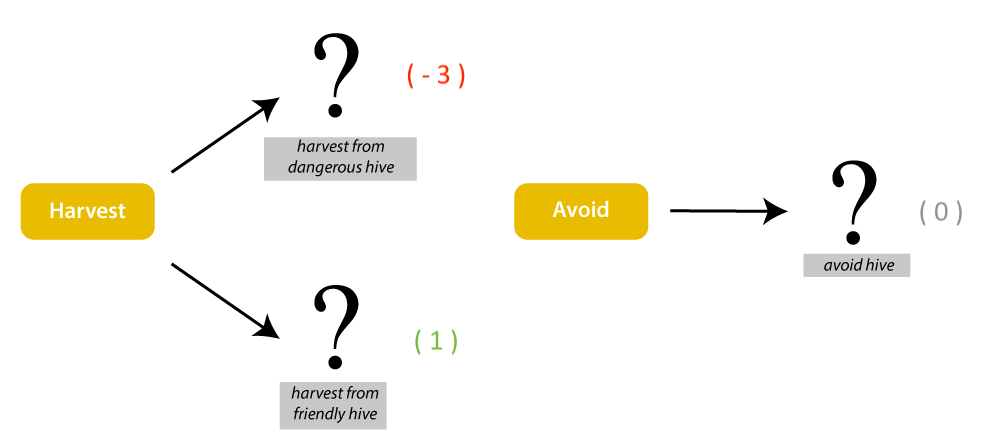',
  choices: ['Next'],
}

timeline.push(TP_instructions);

// the test phase
var decision_TP = {
      type: 'html-button-response',
      stimulus: function(){
        return ""
      },
      prompt: "Harvest honey from this hive?",
      choices: [ 'Harvest', 'Avoid'],
      data: {
        task: condition,
        phase: 'test',
      },
      on_finish: function(data){
        k = k + 1;
        data.k = k;
      },
  };

var feedbackTP = {
  type: 'html-keyboard-response',
  is_html:true,
  choices: jsPsych.NO_KEYS,
  trial_duration: 1400,
  on_start: function(){
    var lastChoice = jsPsych.data.get().last(1).values()[0].button_pressed; // get last avoid/approach decision
    var lastBee = jsPsych.data.get().last(1).values()[0].stimulus; // get last bee shown
    // change based on dim permutation
    if (lastChoice == 0 && (makeConjunctionBees(lastBee))) { 
      return pointsAdded = -3; // change depending on loss condition
    } else if (lastChoice == 0){
      return pointsAdded = 1;
    } else {
      return pointsAdded = 0;
    }
  },
  stimulus: '', 
  on_finish: function(data){
    pointsCurrent = pointsCurrent + pointsAdded;
    data.earnedThis = pointsAdded;
    data.earnedCumulative = pointsCurrent;    
    data.k = k;
  }
};

var testPhase = {
  timeline: [decision_TP, feedbackTP],
  repetitions: 32, //CHANGE TO 32
  randomize_order: false,
};

timeline.push(testPhase);
  
  // ------- POSTTASK QUESTIONNAIRE --------
  
var endquestionsModA = {
  type: 'survey-html-form',
  preamble: '<b>You\'ve finished harvesting honey! Congratulations!</b>',
  html: '<p> We have a couple of short questions before you complete the experiment. </p>'+
  '<p>About what percentage of beehives do you think contained dangerous bees? (enter a value between 0 and 100.)</p>' +
  '<input type="number" min="0" max="100"  onKeyUp="if(this.value>100){this.value=\'100\';}else if(this.value<0){this.value=\'0\';}" id="dangerpercent" name="dangerpercent" required>'+
  '<p>Which feature\/s do you think were most useful for deciding whether a bee variety was friendly or dangerous?</p>' +
  '<input type="checkbox" name="legs" value="checked">Two or six legs<br>' +
  '<input type="checkbox"  name="body" value="checked">Stripes or spots on body<br>' +
  '<input type="checkbox" name="wings" value="checked">Single or double wings<br>' +
  '<p>Did you use pen and paper or another external aid during the task? (Please be honest, your chances to win the lottery will not be affected!) </p>' +
  '        <input type="radio" name="penpaper" id="no" value = "no" >' +
  '        <label for="no">No</label><br>' +
  '        <input type="radio" name="penpaper" id="yes" value = "yes" required>' +
  '        <label for="yes">Yes</label><br>' +
  '        <br><br>',
  button_label: 'Continue',
};

var endquestionsModB = {
  type: 'survey-html-form',
  preamble: '<b>You\'ve finished harvesting honey! Congratulations!</b>',
  html: '<p> We have a couple of short questions before you complete the experiment. </p>'+
  '<p>About what percentage of beehives do you think contained dangerous bees? (enter a value between 0 and 100.)</p>' +
  '<input type="number" min="0" max="100"  onKeyUp="if(this.value>100){this.value=\'100\';}else if(this.value<0){this.value=\'0\';}" id="dangerpercent" name="dangerpercent" required>'+
  '<p>Which feature\/s do you think were most useful for deciding whether a bee variety was friendly or dangerous?</p>' +
  '<input type="checkbox" name="legs" value="checked">Two or six legs<br>' +
  '<input type="checkbox"  name="antennae" value="checked">Antennae or no antennae<br>' +
  '<input type="checkbox" name="wings" value="checked">Single or double wings<br>' +
  '<p>Did you use pen and paper or another external aid during the task? (Please be honest, your chances of winning the lottery will not be affected!) </p>' +
  '        <input type="radio" name="penpaper" id="no" value = "no" >' +
  '        <label for="no">No</label><br>' +
  '        <input type="radio" name="penpaper" id="yes" value = "yes" required>' +
  '        <label for="yes">Yes</label><br>' +
  '        <br><br>',
  button_label: 'Continue',
};

var endquestionsModL = {
  type: 'survey-html-form',
  preamble: '<b>You\'ve finished harvesting honey! Congratulations!</b>',
  html: '<p> We have a couple of short questions before you complete the experiment. </p>'+
  '<p>About what percentage of beehives do you think contained dangerous bees? (enter a value between 0 and 100.)</p>' +
  '<input type="number" min="0" max="100"  onKeyUp="if(this.value>100){this.value=\'100\';}else if(this.value<0){this.value=\'0\';}" id="dangerpercent" name="dangerpercent" required>'+
  '<p>Which feature\/s do you think were most useful for deciding whether a bee variety was friendly or dangerous?</p>' +
  '<input type="checkbox" name="wings" value="checked">Single or double wings<br>' +
  '<input type="checkbox"  name="body" value="checked">Stripes or spots on body<br>' +
  '<input type="checkbox" name="antennae" value="checked">Antennae or no antennae<br>' +
  '<p>Did you use pen and paper or another external aid during the task? (Please be honest, your chances of winning the lottery will not be affected!) </p>' +
  '        <input type="radio" name="penpaper" id="no" value = "no" >' +
  '        <label for="no">No</label><br>' +
  '        <input type="radio" name="penpaper" id="yes" value = "yes" required>' +
  '        <label for="yes">Yes</label><br>' +
  '        <br><br>',
  button_label: 'Continue',
};

var endquestionsModW = {
  type: 'survey-html-form',
  preamble: '<b>You\'ve finished harvesting honey! Congratulations!</b>',
  html: '<p> We have a couple of short questions before you complete the experiment. </p>'+
  '<p>About what percentage of beehives do you think contained dangerous bees? (enter a value between 0 and 100.)</p>' +
  '<input type="number" min="0" max="100"  onKeyUp="if(this.value>100){this.value=\'100\';}else if(this.value<0){this.value=\'0\';}" id="dangerpercent" name="dangerpercent" required>'+
  '<p>Which feature\/s do you think were most useful for deciding whether a bee variety was friendly or dangerous?</p>' +
  '<input type="checkbox" name="legs" value="checked">Two or six legs<br>' +
  '<input type="checkbox"  name="body" value="checked">Stripes or spots on body<br>' +
  '<input type="checkbox" name="antennae" value="checked">Antennae or no antennae<br>' +
  '<p>Did you use pen and paper or another external aid during the task? (Please be honest, your chances of winning the lottery will not be affected!) </p>' +
  '        <input type="radio" name="penpaper" id="no" value = "no" >' +
  '        <label for="no">No</label><br>' +
  '        <input type="radio" name="penpaper" id="yes" value = "yes" required>' +
  '        <label for="yes">Yes</label><br>' +
  '        <br><br>',
  button_label: 'Continue',
};

var endquestionsOg = {
  type: 'survey-html-form',
  preamble: '<b>You\'ve finished harvesting honey! Congratulations!</b>',
  html: '<p> We have a couple of short questions before you complete the experiment. You will be eligible for payment once you answer the following questions. </p>'+
  '<p>About what percentage of beehives do you think contained dangerous bees? (enter a value between 0 and 100.)</p>' +
  '<input type="number" min="0" max="100"  onKeyUp="if(this.value>100){this.value=\'100\';}else if(this.value<0){this.value=\'0\';}" id="dangerpercent" name="dangerpercent" required>'+
  '<p>Which feature\/s do you think were most useful for deciding whether a bee variety was friendly or dangerous?</p>' +
  '<input type="checkbox" name="legs" value="checked">Two or six legs<br>' +
  '<input type="checkbox"  name="body" value="checked">Stripes or spots on body<br>' +
  '<input type="checkbox"  name="wings" value="checked">Single or double wings<br>' +
  '<input type="checkbox" name="antennae" value="checked">Antennae or no antennae<br>' +
  '<p>Did you use pen and paper or another external aid during the task? (Please be honest, your payment will not be affected!) </p>' +
  '        <input type="radio" name="penpaper" id="no" value = "no" >' +
  '        <label for="no">No</label><br>' +
  '        <input type="radio" name="penpaper" id="yes" value = "yes" required>' +
  '        <label for="yes">Yes</label><br>' +
  '        <br><br>',
  button_label: 'Continue',
};

  // ------- Conditional endquestions
function endquestionsShown(){
if(condition == "modifiedA"){
  return endquestionsModA;
  } else if (condition == "modifiedB"){
    return endquestionsModB;
  } else if (condition == "modifiedL"){
    return endquestionsModL;
  } else if (condition == "modifiedW"){
    return endquestionsModW;
  } else {
  return endquestionsOg;
  }
 }
 endquestionsShown();

timeline.push(endquestionsShown());

var comments = {
  type: 'survey-html-form',
  preamble: 'You are almost done!',
  html: '<p>Do you wish to provide any additional feedback? You may share what made the task most difficult or what was particularly helpful.</p>' +
        '<textarea name="feedback" rows="5" cols="50" placeholder="Please enter your feedback here..."></textarea>' +
        '<p>If you do not have any additional comments, simply click "Next".</p>' +
        '<br>',
  button_label: 'Next',
};

timeline.push(comments);

 // calculate bonus
function calculateBonus(){
  if (pointsCurrent<0) {
    return 0;
  } else {
    return pointsCurrent/100; // 1 point = £0.01
  }
};


// finish connection with pavlovia.org 
var pavlovia_finish = {
    type: "pavlovia",
    command: "finish",
    participantId: prolificID
    };
timeline.push(pavlovia_finish);

startExperiment();
  </script>
</html>
